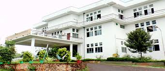

The College of Engineering Vadakara (CEV) is an engineering college in Kozhikode district of Kerala, established in 1999. The first engineering college under the Co-operative Academy of Professional Education (CAPE),[1] Thiruvananthapuram, established by Govt. of Kerala, started functioning in June 1999. The college is affiliated to APJ Abdul Kalam Technological University and approved by All India Council for Technical Education (AICTE).
